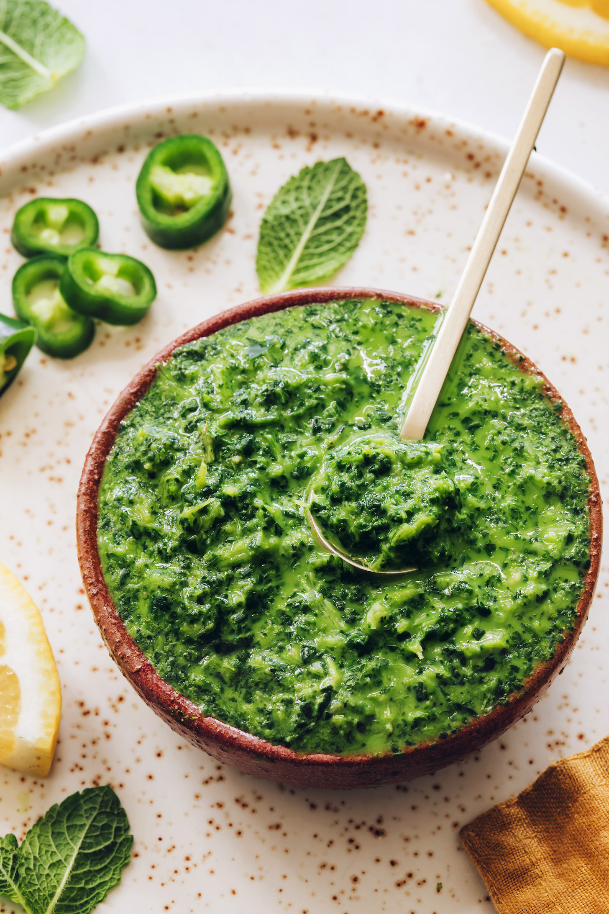

Mint Chutney

Description
I had searched everywhere for a mint chutney recipe. The stars aligned one
day, and I not only found a fabulous house to rent, but a landlord who
knew how to make this chutney! This is Roselyn's recipe.
Ingredients
- 1 medium onion, cut into chunks
- 1 bunch fresh cilantro
- 1 ½ cups fresh mint leaves
- 1 green chile pepper
- 1 tablespoon tamarind juice or lemon juice
- ½ teaspoon salt
- ¼ cup water, or as needed
Steps
-
Combine onion, cilantro, mint, chile pepper, tamarind juice, and salt in
a food processor. Process to a fine paste, adding enough water to
achieve a thick sauce.
Let's go back to Home